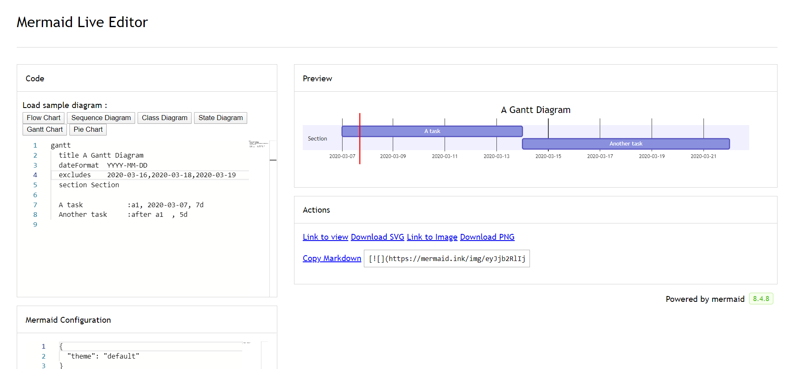

甘特图¶
甘特图是一种条形图，最早由 Karol Adamiecki 在 1896 年开发，并由 Henry Gantt 在 1910 年代独立开发，它说明了项目进度和任何一个项目完成所需的时间量。甘特图说明了一个项目的终端要素和摘要要素的开始和结束日期之间的天数。
给用户的提示¶
甘特图 将把每项计划任务记录为一个连续的条形图，从左边延伸到右边。x 轴代表时间，y 轴记录不同的任务和它们完成的顺序。
重要的是要记住，当一个任务的特定日期、日子或日期集合被 “排除” 时，甘特图将通过向右延伸相同数量的天数来适应这些变化，而不是在任务内创建一个缺口。如这里所示 
但是，如果被排除的日期在两个被设定为连续开始的任务之间，被排除的日期将被图形化地跳过并留出空白，下面的任务将在被排除的日期结束后开始。如这里所示 
甘特图对于跟踪一个项目完成前所需的时间非常有用，但它也可以用来用图形表示 “非工作时间”，只需做一些调整。
Mermaid 可以将甘特图呈现为 SVG、PNG或可以粘贴到文档中的 MarkDown 链接。
gantt
title A Gantt Diagram
dateFormat YYYY-MM-DD
section Section
A task :a1, 2014-01-01, 30d
Another task :after a1 , 20d
section Another
Task in sec :2014-01-12 , 12d
another task : 24d
语法¶
gantt
dateFormat YYYY-MM-DD
title Adding GANTT diagram functionality to mermaid
excludes weekends
%% (`excludes` accepts specific dates in YYYY-MM-DD format, days of the week ("sunday") or "weekends", but not the word "weekdays".)
section A section
Completed task :done, des1, 2014-01-06,2014-01-08
Active task :active, des2, 2014-01-09, 3d
Future task : des3, after des2, 5d
Future task2 : des4, after des3, 5d
section Critical tasks
Completed task in the critical line :crit, done, 2014-01-06,24h
Implement parser and jison :crit, done, after des1, 2d
Create tests for parser :crit, active, 3d
Future task in critical line :crit, 5d
Create tests for renderer :2d
Add to mermaid :1d
Functionality added :milestone, 2014-01-25, 0d
section Documentation
Describe gantt syntax :active, a1, after des1, 3d
Add gantt diagram to demo page :after a1 , 20h
Add another diagram to demo page :doc1, after a1 , 48h
section Last section
Describe gantt syntax :after doc1, 3d
Add gantt diagram to demo page :20h
Add another diagram to demo page :48h
It is possible to set multiple dependencies separated by space:
gantt
apple :a, 2017-07-20, 1w
banana :crit, b, 2017-07-23, 1d
cherry :active, c, after b a, 1d
Title¶
The title is an optional string to be displayed at the top of the Gantt chart to describe the chart as a whole.
Section statements¶
You can divide the chart into various sections, for example to separate different parts of a project like development and documentation.
To do so, start a line with the section keyword and give it a name. (Note that unlike with the title for the entire chart, this name is required.
Milestones¶
You can add milestones to the diagrams. Milestones differ from tasks as they represent a single instant in time and are identified by the keyword milestone. Below is an example on how to use milestones. As you may notice, the exact location of the milestone is determined by the initial date for the milestone and the “duration” of the task this way: initial date+duration/2.
gantt
dateFormat HH:mm
axisFormat %H:%M
Initial milestone : milestone, m1, 17:49,2min
taska2 : 10min
taska3 : 5min
Final milestone : milestone, m2, 18:14, 2min
Setting dates¶
dateFormat defines the format of the date input of your gantt elements. How these dates are represented in the rendered chart output are defined by axisFormat.
Input date format¶
The default input date format is YYYY-MM-DD. You can define your custom dateFormat.
dateFormat YYYY-MM-DD
The following formating options are supported:
Input Example Description:
YYYY 2014 4 digit year
YY 14 2 digit year
Q 1..4 Quarter of year. Sets month to first month in quarter.
M MM 1..12 Month number
MMM MMMM January..Dec Month name in locale set by moment.locale()
D DD 1..31 Day of month
Do 1st..31st Day of month with ordinal
DDD DDDD 1..365 Day of year
X 1410715640.579 Unix timestamp
x 1410715640579 Unix ms timestamp
H HH 0..23 24 hour time
h hh 1..12 12 hour time used with a A.
a A am pm Post or ante meridiem
m mm 0..59 Minutes
s ss 0..59 Seconds
S 0..9 Tenths of a second
SS 0..99 Hundreds of a second
SSS 0..999 Thousandths of a second
Z ZZ +12:00 Offset from UTC as +-HH:mm, +-HHmm, or Z
More info in: http://momentjs.com/docs/#/parsing/string-format/
Output date format on the axis¶
The default output date format is YYYY-MM-DD. You can define your custom axisFormat, like 2020-Q1 for the first quarter of the year 2020.
axisFormat %Y-%m-%d
The following formating strings are supported:
%a - abbreviated weekday name.
%A - full weekday name.
%b - abbreviated month name.
%B - full month name.
%c - date and time, as "%a %b %e %H:%M:%S %Y".
%d - zero-padded day of the month as a decimal number [01,31].
%e - space-padded day of the month as a decimal number [ 1,31]; equivalent to %_d.
%H - hour (24-hour clock) as a decimal number [00,23].
%I - hour (12-hour clock) as a decimal number [01,12].
%j - day of the year as a decimal number [001,366].
%m - month as a decimal number [01,12].
%M - minute as a decimal number [00,59].
%L - milliseconds as a decimal number [000, 999].
%p - either AM or PM.
%S - second as a decimal number [00,61].
%U - week number of the year (Sunday as the first day of the week) as a decimal number [00,53].
%w - weekday as a decimal number [0(Sunday),6].
%W - week number of the year (Monday as the first day of the week) as a decimal number [00,53].
%x - date, as "%m/%d/%Y".
%X - time, as "%H:%M:%S".
%y - year without century as a decimal number [00,99].
%Y - year with century as a decimal number.
%Z - time zone offset, such as "-0700".
%% - a literal "%" character.
More info in: https://github.com/mbostock/d3/wiki/Time-Formatting
Comments¶
Comments can be entered within a gantt chart, which will be ignored by the parser. Comments need to be on their own line and must be prefaced with %% (double percent signs). Any text after the start of the comment to the next newline will be treated as a comment, including any diagram syntax
gantt
title A Gantt Diagram
%% this is a comment
dateFormat YYYY-MM-DD
section Section
A task :a1, 2014-01-01, 30d
Another task :after a1 , 20d
section Another
Task in sec :2014-01-12 , 12d
another task : 24d
Styling¶
Styling of the a gantt diagram is done by defining a number of css classes. During rendering, these classes are extracted from the file located at src/themes/gantt.scss
Classes used¶
Class |
Description |
|---|---|
grid.tick |
Styling for the Grid Lines |
grid.path |
Styling for the Grid’s borders |
.taskText |
Task Text Styling |
.taskTextOutsideRight |
Styling for Task Text that exceeds the activity bar towards the right. |
.taskTextOutsideLeft |
Styling for Task Text that exceeds the activity bar, towards the left. |
todayMarker |
Toggle and Styling for the “Today Marker” |
Sample stylesheet¶
.grid .tick {
stroke: lightgrey;
opacity: 0.3;
shape-rendering: crispEdges;
}
.grid path {
stroke-width: 0;
}
#tag {
color: white;
background: #FA283D;
width: 150px;
position: absolute;
display: none;
padding:3px 6px;
margin-left: -80px;
font-size: 11px;
}
#tag:before {
border: solid transparent;
content: ' ';
height: 0;
left: 50%;
margin-left: -5px;
position: absolute;
width: 0;
border-width: 10px;
border-bottom-color: #FA283D;
top: -20px;
}
.taskText {
fill:white;
text-anchor:middle;
}
.taskTextOutsideRight {
fill:black;
text-anchor:start;
}
.taskTextOutsideLeft {
fill:black;
text-anchor:end;
}
Today marker¶
You can style or hide the marker for the current date. To style it, add a value for the todayMarker key.
todayMarker stroke-width:5px,stroke:#0f0,opacity:0.5
To hide the marker, set todayMarker to off.
todayMarker off
Configuration¶
It is possible to adjust the margins for rendering the gantt diagram.
This is done by defining the ganttConfig part of the configuration object.
How to use the CLI is described in the mermaidCLI page.
mermaid.ganttConfig can be set to a JSON string with config parameters or the corresponding object.
mermaid.ganttConfig = {
titleTopMargin:25,
barHeight:20,
barGap:4,
topPadding:75,
sidePadding:75
}
Possible configuration params:¶
Param |
Description |
Default value |
|---|---|---|
mirrorActor |
Turns on/off the rendering of actors below the diagram as well as above it |
false |
bottomMarginAdj |
Adjusts how far down the graph ended. Wide borders styles with css could generate unwanted clipping which is why this config param exists. |
1 |
Interaction¶
It is possible to bind a click event to a task. The click can lead to either a javascript callback or to a link which will be opened in the current browser tab. Note: This functionality is disabled when using securityLevel='strict' and enabled when using securityLevel='loose'.
click taskId call callback(arguments)
click taskId href URL
taskId is the id of the task
callback is the name of a javascript function defined on the page displaying the graph, the function will be called with the taskId as the parameter if no other arguments are specified.
Beginners tip, a full example using interactive links in an html context:
<body>
<div class="mermaid">
gantt
dateFormat YYYY-MM-DD
section Clickable
Visit mermaidjs :active, cl1, 2014-01-07, 3d
Print arguments :cl2, after cl1, 3d
Print task :cl3, after cl2, 3d
click cl1 href "https://mermaidjs.github.io/"
click cl2 call printArguments("test1", "test2", test3)
click cl3 call printTask()
</div>
<script>
var printArguments = function(arg1, arg2, arg3) {
alert('printArguments called with arguments: ' + arg1 + ', ' + arg2 + ', ' + arg3);
}
var printTask = function(taskId) {
alert('taskId: ' + taskId);
}
var config = {
startOnLoad:true,
securityLevel:'loose',
};
mermaid.initialize(config);
</script>
</body>